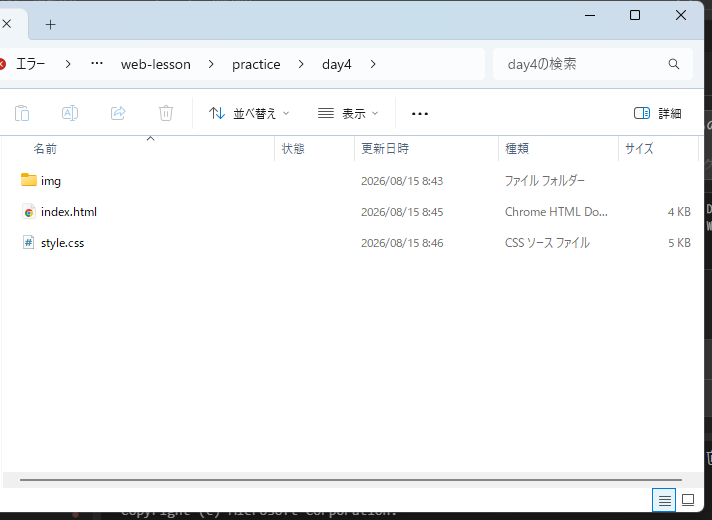
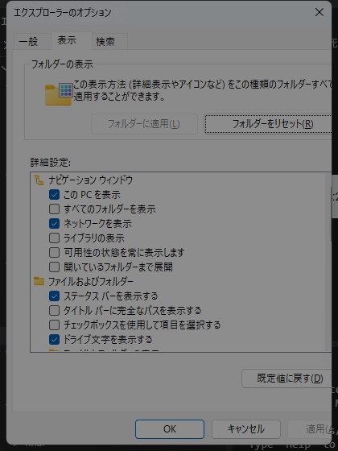
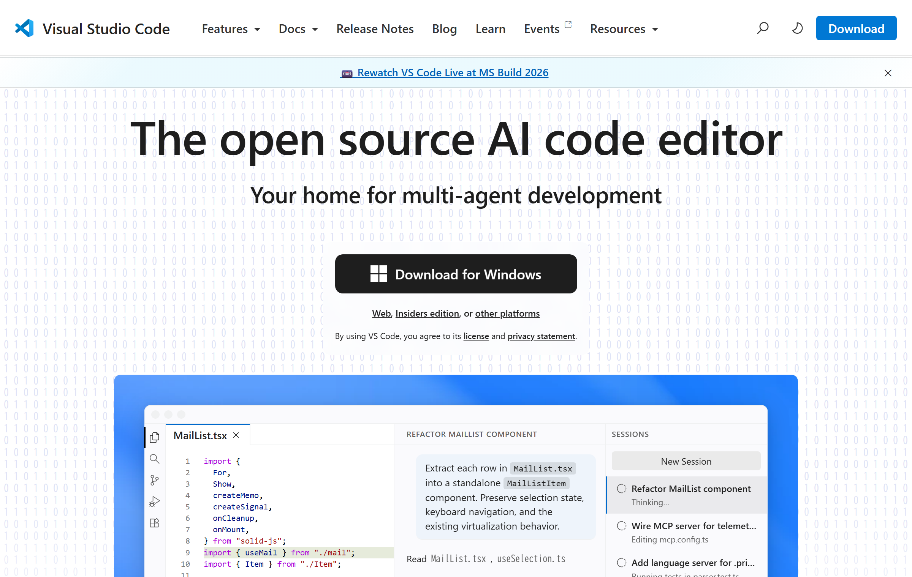
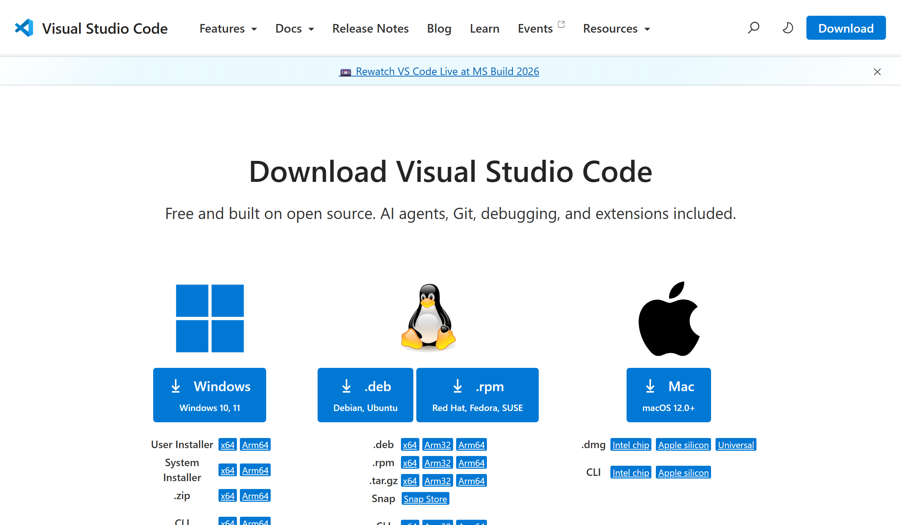
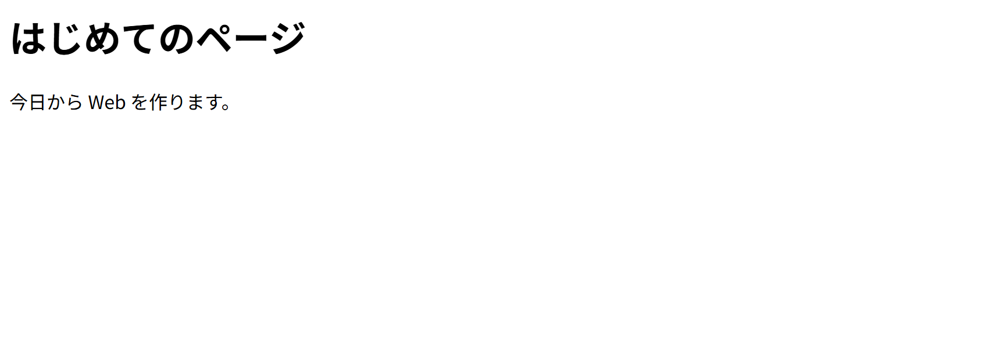

もくじ ／ 資料
はじめての準備
パソコンに何も入っていない状態から、最初の1ページをブラウザで開くまで。
ここに書いてある順番どおりにやれば、必ずできる。全部で30分ほど。
用意するもの
Windowsパソコンと、インターネット。それだけ。お金はかからない。
Macの人へ：手順はほぼ同じ。
Macの人へ：手順はほぼ同じ。
Ctrl を ⌘ に読み替えて。
1
拡張子を見えるようにする
これを最初にやって。 やらないと、あとで必ず事故る。
「拡張子」はファイル名のうしろに付く .html .css の部分。
Windowsは初期設定でこれを隠している。隠れたままだと、
index.html を作ったつもりが index.html.txt になっていた、という事故が起きる。
やり方（Windows 11）
- 適当なフォルダを開く（何でもいい）
- 上の 「表示」 をクリック
- いちばん下の 「表示」 にカーソルを合わせる
- 「ファイル名拡張子」 にチェックを入れる

上のツールバーに「表示」がある。設定が済むと、右のように
index.html
style.css と拡張子まで見えるようになる。Windows 10 の場合は、フォルダを開いて上の「表示」タブ →「ファイル名拡張子」にチェック。
うまく見つからないときの別ルート
キーボードで Windows キー + R → 出てきた窓に次を貼り付けて Enter。

この窓が開く。「詳細設定」の中を下にスクロールして
「登録されている拡張子は表示しない」 のチェックを外して OK。
できたら … ファイル名の後ろに
.txt や .png が見えていれば成功。2
VSCodeを入れる
コードを書くためのソフト。Microsoft が無料で配っている。
- ブラウザで
code.visualstudio.comを開く - まん中の大きいボタン 「Download for Windows」 を押す
- ダウンロードされた
VSCodeUserSetup-….exeをダブルクリック - 「同意する」を選んで 次へ
- 「PATH への追加」にチェックが入っているか確認（初期状態で入っている）
- あとは 次へ を押していってインストール

この画面の黒いボタンを押すだけ。「Insiders edition」は開発中の版なので押さないこと。

ボタンを押すとこの画面に移る。いちばん左の「Windows」を押して。
下にずらっと並んでいる
x64 や Arm64 は押さなくていい。
広告サイトに注意
「VSCode ダウンロード」で検索すると、公式でないサイトが上に出ることがある。
アドレスが
code.visualstudio.com であることを必ず確認して。
できたら … VSCodeが起動して、青っぽい歓迎画面が出れば成功。
3
日本語にする（任意）
最初は英語のメニュー。日本語にしたければ、拡張機能を1つ入れる。
- 左の縦にならんだアイコンのうち、四角が4つのアイコンをクリック
（キーボードならCtrl + Shift + X） - 上の検索欄に
Japaneseと入力 - Japanese Language Pack for Visual Studio Code の Install を押す
- 右下に出る Change Language and Restart を押す
ついでに入れておくと便利
Live Server … 保存した瞬間にブラウザが自動で更新される。同じ手順で
使い方は、htmlファイルを右クリック →「Open with Live Server」。
無くても大丈夫（ダブルクリックで開いて F5 で更新すればいい）。
Live Server を検索。使い方は、htmlファイルを右クリック →「Open with Live Server」。
無くても大丈夫（ダブルクリックで開いて F5 で更新すればいい）。
入れすぎ注意
「便利そう」で10個入れると重くなる。困ってから足すのが正解。
4
フォルダを作る
- デスクトップの何もない所を右クリック → 新規作成 → フォルダー
- 名前を
webにする（半角の英小文字） webの中に、もう1つday1というフォルダを作る
フォルダ名・ファイル名のきまり
- 半角の英数字だけ使う（日本語・スペースは避ける）
- 区切りたいときは
-か_（例：my-site） - 大文字と小文字は別物として扱われることがあるので、小文字で統一するのが安全
デスクトップが OneDrive になっている人へ
デスクトップが OneDrive に同期されていると、パスに OneDrive が入る。
それ自体は問題ないが、次の2点だけ気をつけて。
- 同期中はファイルの保存が一瞬待たされることがある
- あとで GitHub に公開するときは、同期対象から外れた場所（例：
C:\web）のほうが扱いやすい
今の段階では気にしなくて大丈夫。
5
ファイルを作る
- VSCode を開く
- メニューの ファイル → フォルダーを開く で、さっき作った
day1を選ぶ
「このフォルダー内のファイルの作成者を信頼しますか？」と聞かれたら「はい、作成者を信頼します」 - 左側に DAY1 と出る。その右の 新しいファイル のアイコン（紙に＋のマーク）を押す
- ファイル名に
index.htmlと入力して Enter

左がファイル一覧、右が書く場所。慣れるとこの2つしか見ない。
左端の数字は行番号で、エラーが出たときに場所を教えてくれる。
右側の白い（黒い）エリアに、次の2行を打ち込んで。すべて半角で。
打てたら Ctrl + S で保存。タブの右にあった ● が × に変われば保存できている。
< が打てない？
日本語入力をオフにして（
半角/全角 キー、または Alt + `）。
画面右下が「あ」なら日本語、「A」なら半角。< は Shift + 、、> は Shift + 。 。
6
ブラウザで開く
- デスクトップの
web→day1フォルダを開く index.htmlをダブルクリック

こう表示されたら成功。
おめでとうある。 あなたはもう「Webページを作った人」。
ここがスタートライン。あとは DAY 1 から順にやっていくだけ。
ここがスタートライン。あとは DAY 1 から順にやっていくだけ。
これから何度もやる操作なので、覚えておいて。
| やること | 操作 |
|---|---|
| 保存する | Ctrl + S（VSCodeで） |
| 結果を見る | F5（ブラウザで） |
| 元に戻す | Ctrl + Z |
「書く → Ctrl+S → F5 で見る」。この3つを1分に1回くらい繰り返すのが、 いちばん速く・いちばん楽な進め方。
つまずいたら
| こうなった | こうする |
|---|---|
| ダブルクリックしたら、コードがそのまま出た | 拡張子が .txt になっている。手順1に戻ってから、ファイル名を index.html に直す |
| メモ帳が開いた | 右クリック →「プログラムから開く」→ ブラウザ（Chrome や Edge）を選ぶ |
| 文字が「譁�蟄怜喧」みたいに壊れる | 1行目に <meta charset="UTF-8"> を足す（DAY 1 でやる） |
| < や > が全角になってしまう | 日本語入力をオフに。画面右下が「A」になっているか確認 |
| VSCodeの左にファイル一覧が出ない | Ctrl + B で出たり隠れたりする |
| 変更が画面に出ない | 保存を忘れている（Ctrl + S）。それでもダメなら Ctrl + Shift + R |
| ファイル名を間違えた | VSCodeの左の一覧で右クリック →「名前の変更」 |
まだ「プログラム」は書いていない
ここまでは全部準備。うまくいかなくても、あなたの理解力の問題ではない。
道具の使い方に慣れていないだけなので、遠慮なく聞いて。
次は → DAY 0 のスライド、 または パソコンとファイルの基本
← もくじに戻る